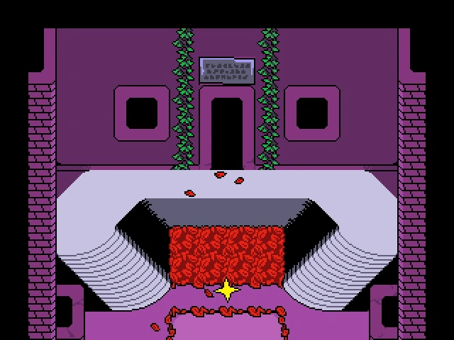
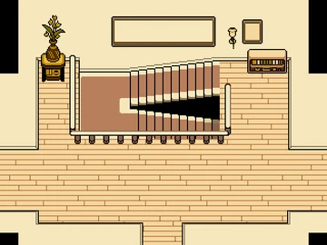

ÁREAS
* Durante UNDERTALE, o jogador pode encontrar várias áreas e locais diferentes.
* Cada área possui personagens e trilhas sonóras únicas, e alta significância a história do jogo.
Ruínas


* As Ruínas são a primeira área do jogo, encontrada após o protagonista cair num buraco no Monte Ebott antes dos eventos do jogo.
Elas se consistem de corredores velhos e desgastados roxos e folhagem vermelha, com algumas armadilhas ao longo do caminho.
* No fim das Ruínas, você encontra uma casa, que é a residência de Toriel. Nesta casa, você pode encontrar uma cozinha, uma sala de estar e um corredor com três quartos.
O primeiro quarto é reservado para você, onde você pode dormir, o segundo quarto é o quarto de Toriel, que você pode inspecionar, e um terceiro quarto, trancado.
Na casa, você também pode encontrar escadas. Essas escadas te levam para a saída das Ruínas, que Toriel te proíbe de entrar.
Se você falar com a Toriel sobre sair do subsolo, ela irá descer as escadas para destruir a saída. Você pode interromper ela, e convencer ela a deixar-lo sair.